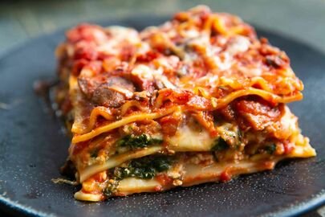
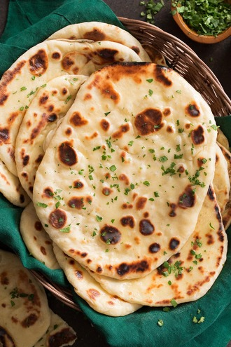

Odin Recipes
Lasagna

Lasagna is a tasty and easy to make dish.
Ingredients:
- Cheese
- Pasta
- Bechamel
- Tomato sauce
- 1 Carrot
- Plant based minced meat
- Olive oil
- Salt
- Pepper
- Oregano
Click here for the recipe
Butter Naan

Butter Naan, the greasy king of side dishes
Ingredients:
- Flour
- Yogurt/Curd
- Yeast or Baking powder
- Oil or Ghee
- Water
Click here for the recipe
Rice and Beans

Rice and Beans, an all-time favourite
Ingredients:
- Onion
- Garlic
- Olive Oil
- Cellery
- Dried paprika
- Cumin
- Turmeric
- any kind of beans
- Basmati or Jasmine rice
Click here for the recipe